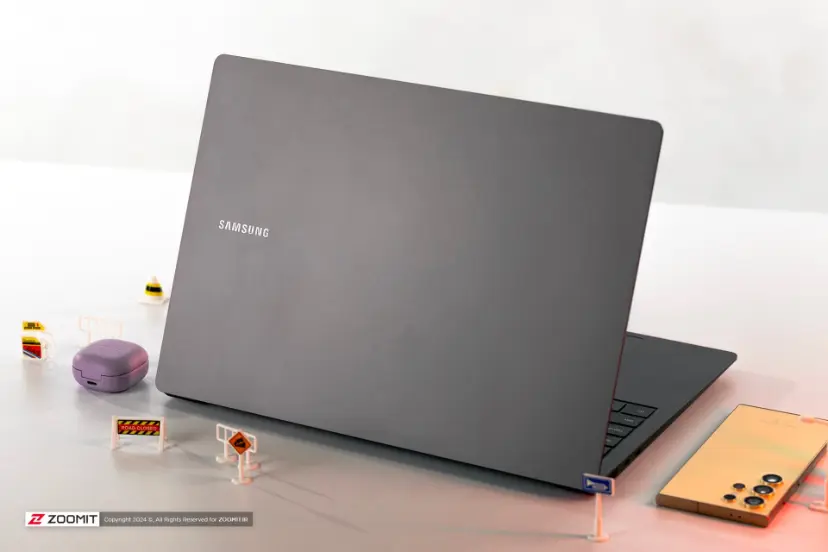

راهنمای انتخاب لپ تاپ مناسب

قبل از خرید لپتاپ به چه نکاتی توجه کنیم؟
انتخاب لپتاپ مناسب به نیازهای روزمره، بودجه و نوع استفاده شما بستگی دارد. قبل از خرید بهتر است مشخص کنید که لپتاپ را برای چه کارهایی نیاز دارید.
اگر بیشتر از لپتاپ برای وبگردی، تماشای فیلم و انجام کارهای ساده استفاده میکنید، یک مدل اقتصادی با مشخصات مناسب میتواند انتخاب خوبی باشد.
پردازنده یکی از مهمترین قطعات لپتاپ است و روی سرعت اجرای برنامهها تأثیر میگذارد. بهتر است متناسب با نوع استفاده خود، پردازنده مناسبی انتخاب کنید.
حافظه رم در اجرای همزمان برنامهها نقش مهمی دارد. رم بیشتر میتواند هنگام انجام چند کار همزمان تجربه روانتری ایجاد کند.
حافظه ذخیرهسازی نیز اهمیت زیادی دارد. لپتاپهای مجهز به SSD معمولاً سریعتر روشن میشوند و برنامهها را با سرعت بیشتری اجرا میکنند.
اگر قصد اجرای بازیهای سنگین یا استفاده از نرمافزارهای گرافیکی را دارید، باید به قدرت کارت گرافیک توجه ویژهای داشته باشید.
کیفیت نمایشگر، اندازه صفحهنمایش و دقت رنگ برای مطالعه، تماشای فیلم، طراحی و ویرایش تصاویر اهمیت دارند.
وزن و اندازه لپتاپ را نیز در نظر بگیرید. اگر زیاد سفر میکنید یا لپتاپ را به دانشگاه و محل کار میبرید، یک مدل سبک میتواند کاربردیتر باشد.
عمر باتری، تعداد درگاهها، کیفیت صفحهکلید و سیستم خنککننده از دیگر مواردی هستند که بهتر است پیش از خرید بررسی کنید.
در نهایت، بهترین لپتاپ لزوماً گرانترین مدل نیست؛ بلکه دستگاهی است که با بودجه، نیازها و شیوه استفاده شما بیشترین هماهنگی را داشته باشد.